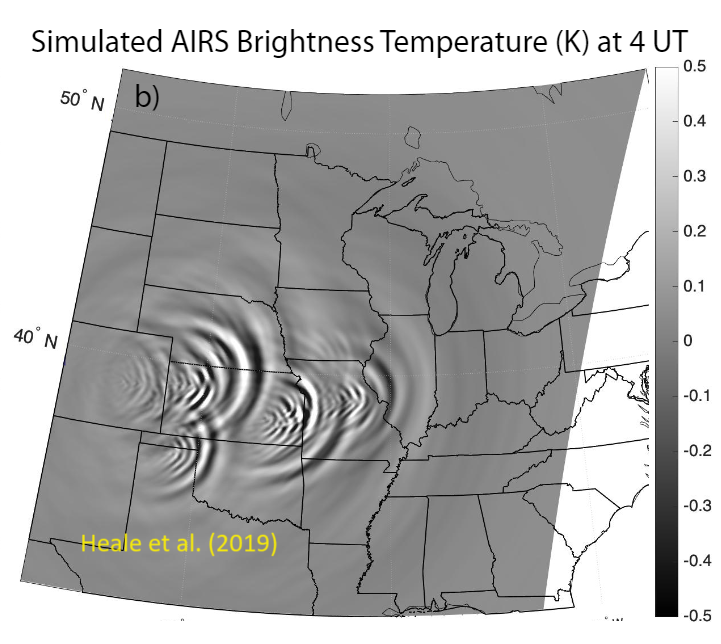

AGW-Driven Impacts on HF Communication
Ionospheric responses to atmospheric gravity waves from thunderstorms and severe weather events on HF radio propagation
Overview
This research focuses on investigating the influence of ionospheric disturbances generated by thunderstorms and snowstorms on High-Frequency (HF) communication systems utilizing SuperDARN radars. Employing the Provision of High-Frequency Raytracing Laboratory for Propagation Studies (PHaRLAP), a 3D raytracing tool, the aim is to quantify alterations in the Maximum Usable Frequency (MUF). This assessment is crucial for understanding the impact of transient ionospheric irregularities induced by severe weather phenomena on HF radio wave propagation.

Fig 1. SuperDARN operation for identifying MSTID: (A) schematic plot of SuperDARN radar ray paths of ground scatter and ionospheric scatter, (B) Fields-of-View (FoV) of SuperDARN HF radars used in this study, (C) HF ray tracing showing radar rays modulated by an MSTID passing through the F Region ionosphere. (D) Geometry used to derive the ground scatter location mapping, (E) range-time-intensity (RTI) plot of ground scatter power showing MSTIDs observed by Blackstone (BKS) Beam 15 during daytime, 19 November 2010. MSTID signatures are observed as bright red stripes with a negative slope.

Fig 2. Multi-instrument AGW/TID characterization combining SuperDARN, GPS TEC, and ionosonde data. The wave parameters (period, horizontal wavelength, propagation direction) are derived through 2D spectral analysis.
Methodology
The methodology involves utilizing observational data from SuperDARN radars, which are adept at capturing the dynamic behavior of the ionosphere during such meteorological events. The quantitative analysis of changes in MUF serves as a robust metric to assess the resilience and reliability of HF communication systems under the influence of natural atmospheric disturbances.
As Co-I (Institutional PI) on a NASA Living with a Star (LWS) award — 'Ionospheric responses to thunderstorm-generated acoustic and gravity waves over the continental US' (2022–2026) — this work contributes SuperDARN analysis and PHaRLAP 3D raytracing to quantify how Traveling Ionospheric Disturbances (TIDs) modify the Maximum Usable Frequency for HF communications.
Recent work (2024–2025) focuses on orographic gravity waves prior to the December 2022 cold air outbreak and thunderstorm-generated AGW impacts across the CONUS. This work contributes to the broader understanding of ionospheric effects on radio wave propagation, providing valuable insights for optimizing communication systems in adverse weather conditions.